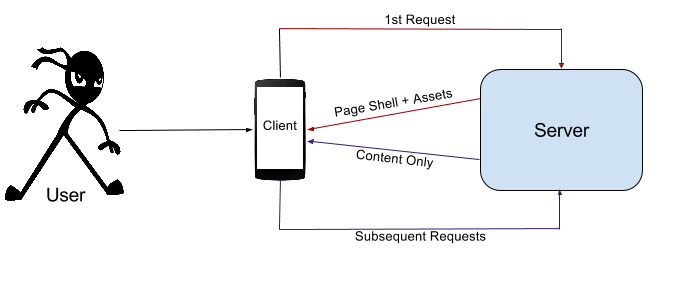

Building a single page application with vanilla js
Last Updated: 10 January, 2021 | First Published: 7 December, 2015
Often times I've come across this framework vs that framework debate. Many times as an observer, some times as a participant and occasionally as the person who *cough* started the debate *cough*. Most frequent arguments in these debates are around the comparatively easy ways to do stuff or the lesser code needs to be written points. What I don't see people talking about is writing vanilla js, using scores of built in APIs and structuring your project better instead of using a framework.
A lot of good folks have talked about this in the past. Some of my favorite reads are zero framework manifesto and Look ma, no frameworks. Many of these frameworks have a wonderful way of marketing themselves by presenting their top features or perceived benefits of usage on their websites or through developer's blogs, however, I don't see as many folks showing ways of building SPA with vanilla js. I therefore decided to re-factor my personal website as a SPA without using any framework. I hope that this post will serve as a good first step when you are building an app on your own without using any frameworks. All code referenced here is available at my github repo. and this website itself acts as a live demo I've built a static site generator and using this site to experiment it out. Will post more details soon.
Design
Prior to refactoring my website was a typical blog written in PHP. Every page request used to do a round trip to a server for all html content and assets, it had a management console etc. During refactoring some of my considerations were...
- No page loads for every post i.e. it should be an SPA
- Posts to be written using markdown syntax
- The blog should be written only in HTML+CSS+JS
- Hosting to be done on github pages or AWS S3
- It had to be mobile friendly
with these things in mind, the high level design of the blog looks like this...

Basic Structure
One of the primary things to look at while developing any application is the organization of the code. This includes everything right from your folder structure and naming conventions to declarations and definitions. Once you do this for one project, it sort of acts like a boilerplate and will be very easy to replicate and extend for your future projects.
The basic structure of the blog application looks like this...
|-- assets
| |-- css <-- All site styles go here
| |-- images <-- All images used in the templates or page shell go here
| `-- js
| |-- config.js <-- Environment specific config file
| |-- init.js <-- Contains all instructions on load
| |-- controllers <-- Business logic and view manipulation functions
| |-- templates <-- context based reusable snippets of HTML
| |-- utils <-- All internal and 3rd party libraries
| `-- views <-- Views exposed to the user
|-- index.html <-- Page shell. Acts like a container. Actual content is populated based on route
|-- posts <-- All posts markdown files go here
`-- uploads <-- All assets used in posts go here
Routing
It becomes very important to have proper routing in place to facilitate deep linking, book marking and better SEO. Many techniques can be used for routing but hash based routing works really well and is easy to implement. On load of the application a routing function is registered against the hashchange event.
The routing function, part of utils library, looks like this...
router: function(route, data){
route = route || location.hash.slice(1) || 'home';
var temp = route.split('?');
var route_split = temp.length;
var function_to_invoke = temp[0] || false;
if(route_split > 1){
var params = extract_params(temp[1]);
}
//fire away...
if(function_to_invoke){
views[function_to_invoke](data, params);
}
}
extract_params function looks like this...
var extract_params = function(params_string){
var params = {};
var raw_params = params_string.split('&');
var j = 0;
for(var i = raw_params.length - 1; i >= 0; i--){
var url_params = raw_params[i].split('=');
if(url_params.length == 2){
params[url_params[0]] = url_params[1];
}
else if(url_params.length == 1){
params[j] = url_params[0];
j += 1;
}
else{
//param not readable. pass.
}
}
return params;
};
The event listener is registered in init.js...
window.addEventListener(
"hashchange",
function(){utils.router()} // the router is part of the utils library
);
Dissecting controllers
Controllers hold the business logic. You can use the functions in here to manipulate your views. These functions are not exposed to the user directly. They can access only templates and the libraries available in utils. They can be invoked by a view or another controller.
The controller taking care of the home page looks like this...
controllers.home_page = function(data, params){
var all_posts = JSON.parse(data);
var posts_to_show = 3;
var template_context = [];
for (var i = 0; i < posts_to_show; i++){
var post = all_posts[i];
var item = {
'link': '#post?'+post.post,
'title': post.post.replace(/-/g, ' '),
'snippet': post.snippet,
'published_on': post.added_on,
};
template_context.push(item);
}
//get recent posts
var recent_posts = templates.recent_posts(template_context);
//get hello text
var hello_text = templates.hello_text();
var final_content = hello_text + recent_posts;
utils.render(
'page-content',
final_content
);
};
Dissecting templates
Templates hold HTML markup for the actual page content. It helps in re-usability when you can have functions generating the HTML you want based on some context passed. All functionality for the templates have to be provided by the controller invoking it by using data binding and event registration techniques. The only exception that I've allowed are the hrefs.
The template for the hello section of the home page is...
templates.hello_text = function(data){
var content = `
<div id="hello_text">
<h2>Hello...</h2>
<img src="assets/images/profile_pic.jpg" align="left" style="width:70px;">
<p>
Thank you for visiting my blog. I am Vinay Kumar NP. I am a passionate techie...
</p>
<p>
I am currently working on a <a href="http://www.int.ai/" target = "_BLANK">startup</a> of my own. I have previously worked in various engineering leadership positions at...
</p>
</div>
`;
return content;
};
Dissecting views
Views are the functions that are directly exposed to user. i.e. they are invoked by the router and are part of the url. There is no other difference between view functions and controllers. You could expose controllers too, but that might hurt modularity.
The view for all posts page looks like this. It simply passes the request to load show_posts controller after making an ajax call to get the posts index file.
views.all_posts = function(data, params){
var api_stub = 'posts/index.json';
utils.request(
api_stub,
'show_all_posts',
'show_all_posts_error'
);
};
Making API Requests
This is the holy grail of any SPA. Though my blog does not need a mechanism to make outside api calls as all my posts are hosted within, I've written it to illustrate the concept. The request method takes the api stub, call back functions, params and fires the request. This is also part of the utils library. (Please be careful of CORS here).
The function to make api calls looks like this...
request: function(api_stub, success_callback, error_callback, callback_params){
api_stub = api_stub || '';
callback_params = callback_params || {};
controllers.show_loader('page-content');
var url = config.api_server + api_stub;
var x = new XMLHttpRequest();
x.onreadystatechange = function(){
if (x.readyState == XMLHttpRequest.DONE) {
if(x.status == 200){
controllers[success_callback](
x.responseText,
callback_params
);
}
else{
controllers[error_callback](
x.status,
callback_params
);
}
}
};
//other methods can be implemented here
x.open('GET', url, true);
x.send();
}
I haven't gotten a chance to do a comparative bench marking but at first glance all my repaints are done very fast with little or no jank. For the question of too many network calls on first load, I am planning to build a python based site packager for one of my other projects, I will post it once done.
I've tested the code on all modern browsers (except IE) and it seems to work without any glitches. Watch out for JS api compatibility while building your own applications (For ex, I've used back ticks which are not compatible with older browsers).
Let me know if you find any bugs or issues with the code.